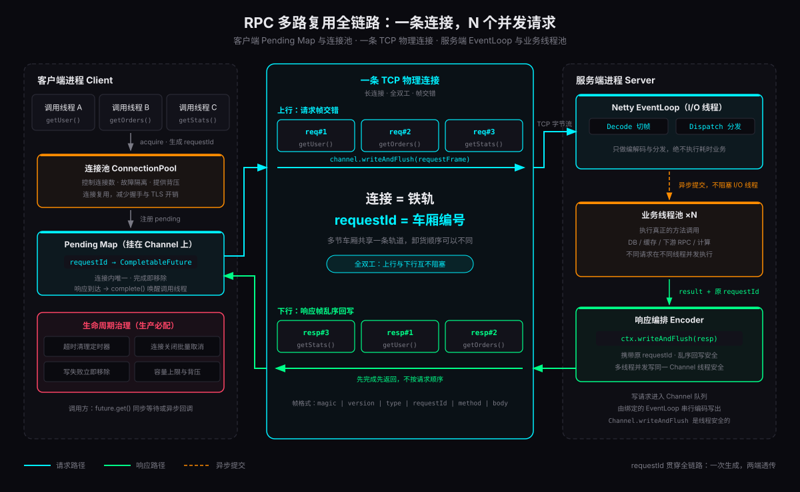
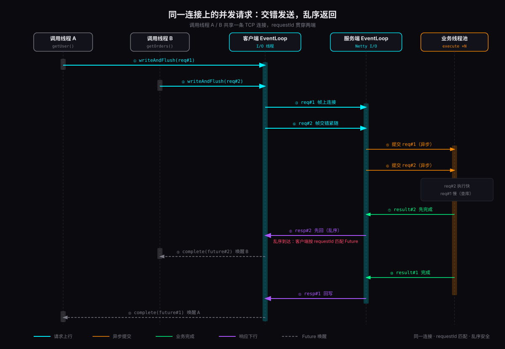

长连接省掉的只是反复握手的成本；真正让 RPC 性能发生质变的，是多路复用——多个逻辑请求共享一条物理连接，服务端按请求标识异步处理，响应按完成顺序回写，客户端用同一个标识唤醒对应的等待方。一条连接，就能撑起成百上千的并发请求。
但「同一连接如何并发请求」在面试和实战里都是高频困惑点：服务端要不要为每条连接建请求池？ConcurrentHashMap 是不是标配？业务线程池和 EventLoop 怎么分工？本文沿着一条请求的完整生命周期，把客户端连接池、Pending Map、协议帧设计、Netty 服务端处理全链路一次性拆开，并给出每一处状态管理的选型依据。
多路复用的本质：连接数与并发数解耦
多路复用解决的是「连接数量」与「并发请求数量」的绑定问题。同步短连接里两者 1:1 绑死，连接数随并发线性增长；长连接若每次仍只处理一个请求，只是把连接复用成了串行通道；多路复用引入请求标识后，连接上的字节流被切分为多个逻辑帧，每帧携带 requestId，声明自己属于哪一次调用。
| 连接模型 | 连接与并发 | 请求标识 | 等待方式 |
|---|---|---|---|
| 同步短连接 | 1 请求 : 1 连接，握手与 TIME_WAIT 成本高 | 不需要 | 同步阻塞，连接数随并发线性增长 |
| 串行长连接 | 复用连接，但请求必须排队 | 不需要 | 前一个响应回来才能发下一个，吞吐被 RTT 锁死 |
| 多路复用长连接 | N 请求 : 1 连接，帧交错收发 | requestId | Future 异步等待，谁先回来先唤醒谁 |
可以把一条连接理解成一条铁路：连接是铁轨，requestId 是车厢编号。火车可以同时装载多节车厢，不同车厢的卸货顺序也可以不同——只要编号不丢，货物最终都能准确交还。HTTP/2 的 streamId、gRPC 的 stream、自定义 RPC 的 requestId，本质都是这节车厢的编号。
服务端全链路：六层接力
一条请求从进入 Netty 到客户端 Future 被唤醒，要经过六层接力：
- 接入层：TCP 三次握手建立连接，Netty 为每条物理连接分配一个 Channel。
- 解码层：ByteToMessageDecoder 从字节流切帧，还原 requestId、method、body 等协议字段。
- 分发层：按 method 定位服务处理器，把请求提交给业务线程池——EventLoop 的工作到此为止。
- 业务处理层：执行真正的方法，可能访问数据库、缓存或下游服务，耗时不可控。
- 响应编排层：拿到结果后构造响应帧，携带原 requestId 写回同一个 Channel。
- 客户端匹配层：客户端收到响应，用 requestId 查 Pending Map，complete 对应的 Future。
下面是一个保留核心结构的简化实现。关键动作只有一个：解码出 RpcRequest 后，不在 EventLoop 中执行耗时业务，而是交给业务线程池，完成后按原 requestId 回写。
协议设计：requestId 是唯一的钥匙
一个最小可用的 RPC 帧可以这样设计：
requestId 必须遵守四条铁律，每一条背后都是一类真实事故：
客户端：连接池与 Pending Map
下面把两个并发请求的完整时序摊开：调用线程 A、B 共享一条连接，req#2 因为不查库先完成，于是先于 req#1 返回——客户端靠 requestId 而不是到达顺序完成匹配。

连接池的价值不在正确性，而在资源治理：
- 控制连接数：防止连接随实例数与并发无限膨胀
- 隔离故障：某条连接断开，只影响其上的 pending 请求
- 降低建连成本：连接复用减少握手与 TLS 开销
- 提供背压：无可用连接时排队等待或快速失败
客户端调用侧的完整闭环只需三步：借出连接、挂上 pending、写帧并兜底清理。
Pending Map 的推荐落点不是全局单例，而是挂在 Channel 上：
容器选型到这里可以顺带回答一个高频疑问：ConcurrentHashMap 是不是标配？判断依据是状态的作用域和访问线程，而不是流行做法：
| 状态类型 | 推荐容器 | 理由 |
|---|---|---|
| 单连接 pending 请求 | Channel attr map | 作用域在连接内，生命周期随连接关闭，天然隔离，没有全局竞争 |
| 全局连接注册表 | ConcurrentHashMap | 多个 I/O 线程、管理线程、监控线程会并发读写连接状态 |
| 服务端请求追踪 | 按需 | 服务端透传 requestId 即可；只有链路追踪、限流、超时治理才需要保存 |
| 客户端请求池 | 优先挂 Channel | 响应一定从原连接回来，挂 Channel 减少误匹配与全局锁竞争 |
即使选对了容器，它也只保证并发安全。生产系统必须同时处理：连接关闭时取消所有 pending Future、响应超时移除记录并失败回调、write 失败立即清理、requestId 回收策略、pending 容量上限与背压。这些没有一件是容器能替你做的。
连接复用之外：与 HTTP/1.1、HTTP/2、gRPC 的差异
HTTP/1.1 keep-alive 是连接复用，不是多路复用——一个连接上的多个请求必须按序等响应，否则无法区分响应属于谁，所以浏览器要对同一域名开 6 条连接。HTTP/2 才把多路复用做成协议能力：stream 帧交错传输，streamId 关联请求与响应，思路与自定义 RPC 的 requestId 完全同源。
| 协议 | 多路复用能力 | 请求标识 | 适用场景 |
|---|---|---|---|
| HTTP/1.1 keep-alive | 连接复用，但响应必须按序返回 | 无 | 浏览器、通用网关；客户端靠连接池撑并发 |
| HTTP/2 | 完整多路复用，stream 帧交错 | streamId | 网关、API、跨系统调用，生态最成熟 |
| gRPC | HTTP/2 之上叠加 RPC 语义 | streamId | 跨语言 RPC；流控、超时、错误码标准化 |
| Netty 自定义 RPC | 自定义帧 + 乱序响应 | requestId | 内部服务间高性能调用，协议与链路完全可控 |
生产注意事项
多路复用不是把并发全塞进一条连接就万事大吉，它引入了新的复杂度。上线前对照这份清单：
- 队头阻塞：大响应占住写队列会延迟同连接的其他响应，必要时分片或限制大响应
- 背压：pending 请求要有容量上限，超限排队或快速失败，否则内存被放大到 OOM
- 超时清理：定时器扫描过期 pending，completeExceptionally 并移除，防止 map 慢性泄漏
- 乱序协议：多线程完成后回写顺序天然乱序，协议与客户端必须支持乱序响应
- 连接关闭：主动关闭、对端关闭、I/O 异常统一触发「取消全部 pending」流程
- 分层限流：连接数与单连接并发请求数分开限流，二者挡住的是不同故障
总结
把全链路压缩成三个可迁移的洞见：
- 多路复用的本质是解耦：requestId 把「并发请求数」从「连接数」里解放出来，连接回归纯传输语义，并发回归线程模型。
- 异步分发是正确性的前提：EventLoop 只做编解码与分发，业务进线程池——否则一条慢请求会冻结整条连接甚至整个 EventLoop 上的所有请求。
- ConcurrentHashMap 是工具不是答案：选型依据是状态的作用域与访问线程；真正决定系统稳定性的，是生命周期治理——超时、失败、关闭、背压与清理。
回到最初的问题：服务端要不要建请求池？多数情况下不需要——透传 requestId 即可。真正要建的是客户端的 Pending Map，而它最好挂在 Channel 上。多路复用不是某个 API，而是一条完整的协议与生命周期闭环：标识逻辑请求、承载物理传输、控制资源边界、异步分发、按标识回写、按标识唤醒。把这个闭环走通，一条连接撑起整个服务的并发，是水到渠成的事。
参考资料
- Netty · Channel Javadoc（线程安全声明：一个 Channel 可被多线程安全调用） netty.io/4.1/api
- Netty · User Guide for 4.x（EventLoop 与线程模型） netty.io/wiki
- IETF · RFC 9113 HTTP/2（stream 多路复用与帧交错） rfc-editor.org/rfc/rfc9113
- gRPC · What is gRPC?（HTTP/2 之上的 RPC 语义） grpc.io
- Apache Dubbo（长连接多路复用的工业级实践） github.com/apache/dubbo
- Apache brpc · IO 设计文档（连接复用与单连接并发请求的权衡讨论） github.com/apache/brpc